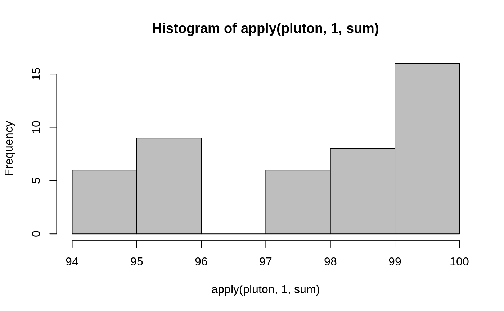

pluton.RdThe pluton data frame has 45 rows and 4 columns,
containing percentages of isotopic composition of 45 Plutonium
batches.
data(pluton)
This data frame contains the following columns:
the percentages of \(\ ^{238}Pu\), always less than 2 percent.
the percentages of \(\ ^{239}Pu\), typically between 60 and 80 percent (from neutron capture of Uranium, \(\ ^{238}U\)).
percentage of the plutonium 240 isotope.
percentage of the plutonium 241 isotope.
Note that the percentage of plutonium~242 can be computed from the other four percentages, see the examples.
In the reference below it is explained why it is very desirable to combine these plutonium patches in three groups of similar size.
Available as pluton.dat from the archive of the University of Antwerpen,
..../datasets/clusplot-examples.tar.gz, no longer available.
Rousseeuw, P.J. and Kaufman, L and Trauwaert, E. (1996) Fuzzy clustering using scatter matrices, Computational Statistics and Data Analysis 23(1), 135--151.
